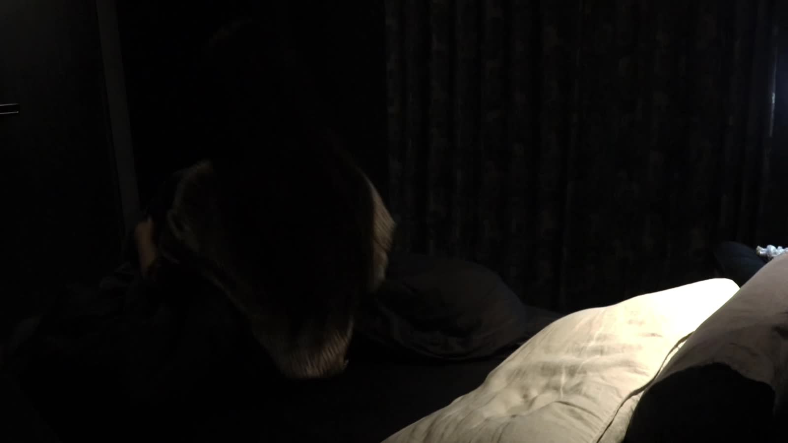

ROUGH CUT 01 / 06:01
Initial assembly
An early arrangement of the footage, before the interview and sound layers described in the later version.

A SHORT DOCUMENTARY · 2025
The pressure to become someone.
The exhaustion of never feeling enough.
01 / THE FILM
What happens when the pressure to be better becomes the feeling that you are never enough?
Through everyday images, personal reflections and interviews, Twenty explores the invisible pressure of productivity culture, digital validation and comparison in early adulthood.
02 / THE FINAL CUT
A FEW POINTS OF ENTRY
Four moments from the finished film.
Select a frame to watch it in context.
03 / AT THE EDITING TABLE
A sequence is more than its individual images. Here, the earlier versions sit beside the final film so the changes can be seen, not just described.
The complete drafts remain available here, without interrupting the first viewing of the finished film.
ROUGH CUT 01 / 06:01
An early arrangement of the footage, before the interview and sound layers described in the later version.
ROUGH CUT 02 / 05:57
A subsequent version incorporating voiceover and interviews while the narrative structure was still being developed.
04 / AFTER THE FILM
A film about a private feeling
with a much larger context.